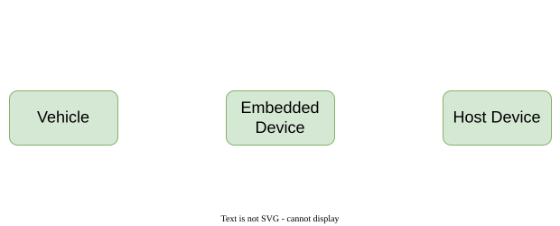
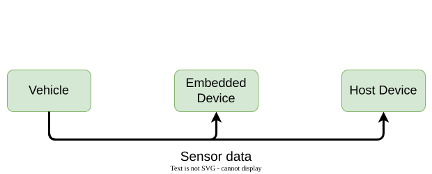
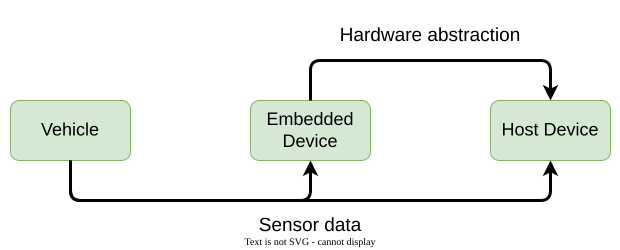
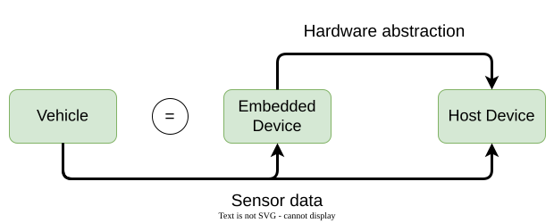
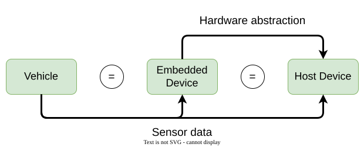
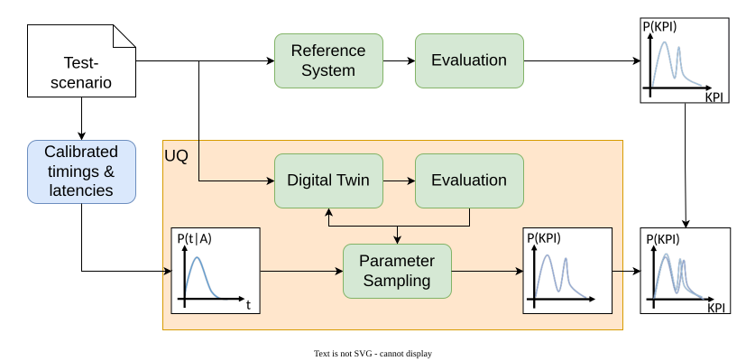

Digital Twins
Credible virtual models across domains
Dr. Fabian Franzelin · 2026-09-24
Talk · W2-Professorship Computer Science · Reutlingen University
Introduction
Reliable testing of the application code of a release candidate of a robotaxi platform at high scale, with 13,500 h of recomputed data within 7 days.
- Applications are exposed to uncontrollable uncertainties
- The digital twin is a reliable, virtual model of the vehicle
- Use Uncertainty Quantification (UQ) to close the reality gap
- Run representative test scenarios on the digital twin at scale in the cloud

The Setup





Behavior on the embedded device matches the vehicle.
Behavior on the host device matches the vehicle.
Credibility Through Co-Simulation
Middleware Player
- Controls data flow between applications
- Controls control flow of applications
Timing Simulation
- Receives workload information
- Captures timing behavior
- Provides schedule updates

Verification via UQ

UQ closes the reality gap → evidence for the credibility assessment
Conclusion - Cars to Clinics
Networked Systems
- Service oriented communication — from ECUs to SDC/BICEPS medical devices
Co-simulation & Middleware
- Middleware player → patient-specific device twin
Credibility Assessment
- Aligns with regulatory needs (ISO 26262 → IEC 62304)
References
Patents
- Franzelin, F.; Kokemüller, J. Computer-implementierte Testumgebung sowie Verfahren zum Testen von Software-Komponenten. Robert Bosch GmbH, DE 10 2021 214 973.1, 2021.
- Franzelin, F.; Kokemüller, J. Verfahren zum Testen einer auf mehrere Programme verteilten Datenverarbeitung. Robert Bosch GmbH, DE 10 2022 203 166.0, 2022.
- Three further patents pending (Robert Bosch GmbH).
Industrial research (unpublished)
- Bosch research reports on uncertainty quantification for safety-critical automotive software, in collaboration with Prof. Bruno Sudret (ETH Zürich).
Paper(s)
- Jakeman, J. D.; Franzelin, F.; Narayan, A. et al. “Polynomial chaos expansions for dependent random variables”. Computer Methods in Applied Mechanics and Engineering 351 (2019), pp. 643–666.
- Markus Köppel, Fabian Franzelin, Ilja Kröker u. a. “Comparison of data-driven uncertainty quantification methods for a carbon dioxide storage benchmark scenario”. In: Computational Geosciences 23.2 (Nov. 2018), S. 339–354.